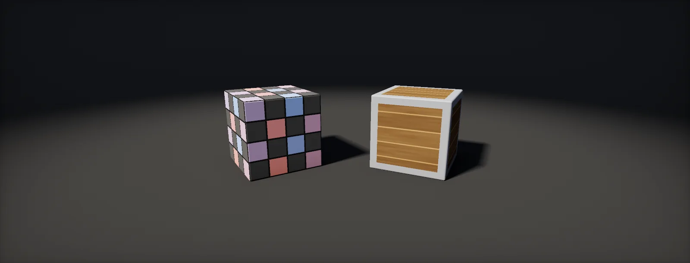

Texturing a Game Asset
How a model gets its textures: unwrapping UVs, padding against mip bleeding, texel density targets, baking from a high-poly model, why hard edges cost vertices, when to share textures, and exporting to the engine.

UVs: flattening the surface
A texture is flat; a model is not. cuts the surface along seams into pieces (islands) that can lie flat, and lays them out in the 0–1 square of UV space. Two things make an unwrap good: islands keep their proportions (no stretching), and every island gets the same amount of texture per metre (even density). Stretch an island and watch the checker:
Seams are unavoidable, so hide them: along hard edges, in crevices, on the side of an object that faces away from the camera, under straps and belts on characters. Every seam is also a place where the texture is discontinuous, so normal map details and painted strokes must be continued across it in the painting tool.
Padding and mip bleeding
The empty space between islands is not empty to the GPU. Mipmaps average 2 × 2 texels into one, then 4 × 4, and so on, so at a distance the background colour bleeds into the edges of every island and shows up as thin dark or bright lines along the seams. The fix is (also called dilation or edge padding): fill the space around each island with the island's own colours. At mip level k one texel covers 2ᵏ original texels, so padding of p texels keeps the edges clean down to mip log₂ p:
Substance Painter, Designer and most bakers dilate on export (Dilation or Padding: infinite). Islands need a gap of about twice the padding between them so their paddings do not overwrite each other; 8 to 16 px at 2048 is common.
Texel density targets
Assets made by different artists must match in sharpness, or a crisp crate sits next to a blurry wall. Teams agree on a target in texels per metre, and every asset is unwrapped to hit it. For a surface with area A that uses a fraction u of a texture of size T:
Typical targets are around 512 px/m for third-person games and 1024 px/m or more for first-person views, often with exceptions for heroes and props the player picks up. Why those numbers work is the topic of texel density and the screen.
Baking a high-poly model
Detail too small for the game mesh is modelled or sculpted on a high-resolution copy and into textures. For every texel of the low-poly mesh, the baker casts a ray along the surface normal, finds the high-poly surface and records its normal, its distance (height), how occluded it is (AO), its curvature and thickness. Rays need a maximum distance (or a cage, an inflated copy of the low-poly mesh that sets the distance per vertex). Too short and the ray misses the detail; too long and it hits a different part of the model:
One more rule decides whether a baked normal map looks right in the engine: the baker and the engine must use the same tangent basis. Unity, Unreal, Substance and Blender all use MikkTSpace; bake with it and import the mesh with tangents calculated the same way (Unity: Tangents: Calculate Mikktspace). Bake with the final low-poly mesh, triangulated, and with the same smoothing as in the game, otherwise shading gradients appear on flat faces.
Hard edges, seams and vertex count
A vertex on the GPU has exactly one position, one normal and one UV. Where a hard edge (two normals) or a UV seam (two UVs) passes through a vertex, the engine has to duplicate it. That is why a hard edge should always also be a UV seam: the vertex is split anyway, and the normal map bakes cleanly on both sides. The cost shows up in the vertex count the GPU actually processes:
The vertex count your modelling tool shows is the number of positions; the engine's statistics (Unity's Stats panel, the mesh preview) show the split count. A difference of 30 to 50 % is normal for an unwrapped game mesh.
Unique, tiling and trim sheets
Not every asset deserves its own textures. Three strategies, often mixed on one model:
- Unique textures: every texel belongs to one place on one model. Best for characters and hero props; the memory grows with every asset.
- Tiling materials: a material that repeats seamlessly (brick, plaster, metal), mapped by UVs larger than 0–1 or by projection, with masks or vertex colours to blend variants.
- : one texture holding horizontal strips of detail (panel edges, bolts, mouldings). Modellers map the faces of many assets onto those strips. One trim sheet can texture a whole building set.
From the painting tool to the engine
The painting tool works with many layers and full-precision maps; the engine wants a few packed, compressed textures. The export step decides how they meet:
- Use the engine's export preset. Substance Painter ships presets for HDRP (base colour, normal, and the mask map with metallic, AO, detail mask and smoothness), URP and Unreal (base colour, normal, and an occlusion/roughness/metallic texture). The channel layouts are explained in packing layouts.
- Normal map convention. OpenGL (Y+) for Unity, DirectX (Y−) for Unreal; most tools convert on export.
- Padding on. Dilation to infinity, so the mip chain stays clean.
- Names with suffixes.
Crate_BC,Crate_N,Crate_MS: the engine can then set import settings automatically (an import script). - Resolution and bit depth. Export at the size you will ship (or larger and let the engine's Max Size scale down); 8 bits per channel is enough for everything except height maps used for displacement (16 bits).
Build it in Unity HDRP
Three tools close the loop from the painting tool to the engine: the right model import settings, a debug view that colours every surface by its texel density, and an editor report that measures it per mesh. Written for Unity 6 with HDRP 17; Unity 2022 LTS works the same apart from a few renamed menu entries.
- Select the FBX. In the Model tab set Normals to
Importand Tangents toCalculate Mikktspace, matching the baker. Tick Generate Lightmap UVs only if the object is lightmapped and has no second UV set of its own. - Export textures from Substance Painter with the Unity HD Render Pipeline (Metallic Standard) preset (or your own with the same layout), normal map format OpenGL, padding Infinite.
- Create the graph: in the Project window, Create > Shader Graph > HDRP > Unlit Shader Graph. Open it and check the Graph Inspector > Graph Settings.
- Add a UV node and a Position node (World). Save
TexelDensity.hlsl. In the graph, add a Custom Function node. Set Type toFile, Source toTexelDensity.hlsland Name toTexelDensity(without the_floatsuffix). Add the inputs UV (Vector 2), PositionWS (Vector 3), TextureSize (Float), Target (Float) and the outputs Color (Vector 3), Density (Float), in that order and with those types: they must match the function's parameters. - Set TextureSize to the size of the material's textures (2048) and Target to your team's px/m (512). Green is on target, blue too blurry, red sharper than needed. Swap this material onto assets while checking them.
- Put
TexelDensityReport.csin anEditorfolder, select objects in the scene and use Tools > Atlas > Texel Density of Selection.
#ifndef ATLAS_TEXEL_DENSITY_INCLUDED
#define ATLAS_TEXEL_DENSITY_INCLUDED
// Texels per metre at this pixel: how far the UV moves (in texels) per screen pixel,
// divided by how far the surface moves (in metres) per screen pixel.
void TexelDensity_float(float2 UV, float3 PositionWS, float TextureSize, float Target,
out float3 Color, out float Density)
{
float tx = length(ddx(UV)) * TextureSize, ty = length(ddy(UV)) * TextureSize; // texels per pixel
float mx = length(ddx(PositionWS)), my = length(ddy(PositionWS)); // metres per pixel
Density = 0.5 * (tx / max(mx, 1e-6) + ty / max(my, 1e-6));
float r = log2(max(Density, 1e-3) / Target); // 0 = on target, -1 = half, +1 = double
float3 low = float3(0.15, 0.35, 1.0), ok = float3(0.2, 0.85, 0.3), high = float3(1.0, 0.25, 0.15);
Color = r < 0 ? lerp(ok, low, saturate(-r)) : lerp(ok, high, saturate(r));
float2 g = abs(frac(UV * TextureSize / 64.0) - 0.5); // a grid line every 64 texels
Color *= 0.7 + 0.3 * step(0.45, max(g.x, g.y));
}
#endif#if UNITY_EDITOR
using UnityEditor;
using UnityEngine;
// Texel density of each selected mesh: T * sqrt(UV area / world area).
// Overlapping or mirrored UV islands are counted twice, so treat the result as a check, not gospel.
public static class TexelDensityReport
{
[MenuItem("Tools/Atlas/Texel Density of Selection")]
static void Report()
{
foreach (var go in Selection.gameObjects)
{
var mf = go.GetComponent<MeshFilter>();
if (mf == null || mf.sharedMesh == null) continue;
Mesh mesh = mf.sharedMesh;
Vector3[] v = mesh.vertices;
Vector2[] uv = mesh.uv;
int[] t = mesh.triangles;
if (uv.Length == 0) { Debug.LogWarning($"{go.name}: no UVs"); continue; }
Matrix4x4 m = go.transform.localToWorldMatrix;
double world = 0, uvArea = 0;
for (int i = 0; i < t.Length; i += 3)
{
Vector3 a = m.MultiplyPoint3x4(v[t[i]]), b = m.MultiplyPoint3x4(v[t[i + 1]]), c = m.MultiplyPoint3x4(v[t[i + 2]]);
world += Vector3.Cross(b - a, c - a).magnitude * 0.5;
Vector2 p = uv[t[i]], q = uv[t[i + 1]], s = uv[t[i + 2]];
uvArea += Mathf.Abs((q.x - p.x) * (s.y - p.y) - (s.x - p.x) * (q.y - p.y)) * 0.5;
}
var r = go.GetComponent<Renderer>();
Texture tex = r != null && r.sharedMaterial != null ? r.sharedMaterial.mainTexture : null;
int size = tex != null ? tex.width : 2048;
double density = size * System.Math.Sqrt(uvArea / System.Math.Max(world, 1e-9));
Debug.Log($"{go.name}: {world:0.00} m², UV coverage {uvArea * 100:0} %, {density:0} px/m at {size} px");
}
}
}
#endifThe debug view uses screen derivatives, so it measures what the camera actually sees, including scaling of the object in the scene. Mirrored or overlapping islands are fine for the view but inflate the report's UV coverage.
Identical. Substance Painter's URP preset packs metallic and smoothness into one texture (R and A) with AO separate.
FBX import: Normal Import Method Import Normals, Use MikkTSpace on (default). The Required Texture Resolution view mode and the editor's Texture Streaming Accuracy views show how texel density compares with the screen. Export from Substance Painter with the Unreal Engine (Packed) preset (ORM).
Sources and further reading
The formulas and engine details in this unit come from these references. Engine documentation changes between versions.
- DocsSubstance 3D Painter: Baking and ExportAdobeBakers, cages, ray distances and export presets for each engine.
- ArticleMikkTSpaceMorten S. MikkelsenThe tangent basis used by Unity, Unreal, Blender and Substance.
- DocsModel import settings: TangentsUnityNormals and tangents options on import.
- WikiPolycount wiki: Texture Baking, Edge Padding, Trim SheetsPolycount communityPractical baking and texturing knowledge collected by game artists.